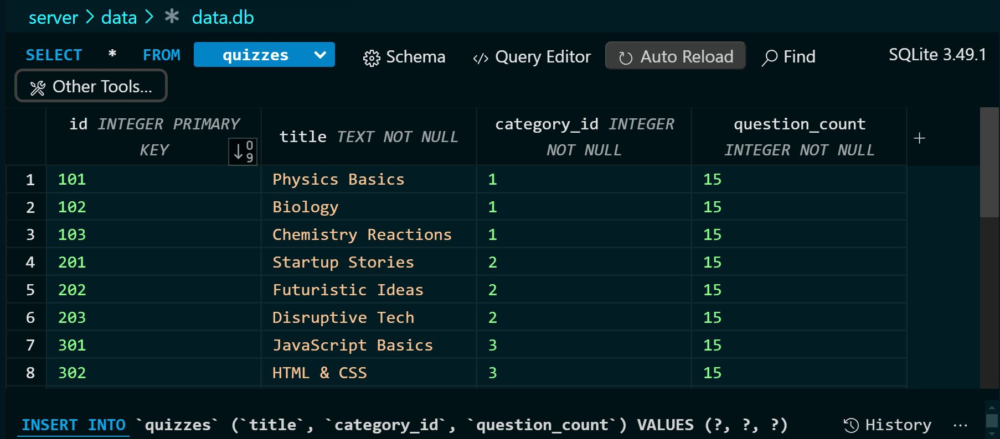

-
🗃️ SQLite DB Setup (db.js)
Created a dedicated database setup file to initialize a users and quizzes table on
app start.
import path from 'path';
import Database from 'better-sqlite3';
import { fileURLToPath } from 'url';
const __dirname = path.dirname(fileURLToPath(import.meta.url));
const dbPath = path.resolve(__dirname, 'data.db'); // safe full path
const db = new Database(dbPath);
db.prepare(\`
CREATE TABLE IF NOT EXISTS users (
id INTEGER PRIMARY KEY AUTOINCREMENT,
email TEXT UNIQUE NOT NULL,
password TEXT NOT NULL
)
\`).run();
Same for quizzes
db.prepare(\`
CREATE TABLE IF NOT EXISTS quizzes (
id INTEGER PRIMARY KEY,
title TEXT NOT NULL,
category_id INTEGER NOT NULL,
question_count INTEGER NOT NULL
)
\`).run();
And for questions
db.prepare(\`
CREATE TABLE IF NOT EXISTS questions (
id INTEGER PRIMARY KEY AUTOINCREMENT,
quiz_id INTEGER NOT NULL,
question TEXT NOT NULL,
options TEXT NOT NULL,
answer TEXT NOT NULL,
FOREIGN KEY (quiz_id) REFERENCES quizzes(id)
)
\`).run();
export default db;
-
🔠Updated Register Route
Checks for existing user by email, hashes password, and stores the user securely.
fastify.post('/api/register', async (req, reply) => {
const { email, password } = req.body
if (!email || !password) {
return reply.code(400).send({ error: 'Email and password required' })
}
const existing = db.prepare('SELECT * FROM users WHERE email = ?').get(email)
if (existing) {
return reply.code(400).send({ error: 'Email already registered' })
}
const hashed = await bcrypt.hash(password, 10)
db.prepare('INSERT INTO users (email, password) VALUES (?, ?)').run(email, hashed)
return reply.send({ success: true })
})
-
🔠Updated Login Route
Validates credentials using the new database and returns a JWT token.
fastify.post('/api/login', async (req, reply) => {
const { email, password } = req.body
if (!email || !password) {
return reply.code(400).send({ error: 'Email and password required' })
}
try {
const user = db.prepare('SELECT * FROM users WHERE email = ?').get(email)
if (!user || !(await bcrypt.compare(password, user.password))) {
return reply.code(401).send({ error: 'Invalid credentials' })
}
const token = fastify.jwt.sign({ email: user.email })
return reply.send({ token })
} catch (err) {
console.error('Login error:', err)
return reply.code(500).send({ error: 'Internal server error' })
}
})
-
🧪 DB Editing Tool
Used SQLite3 Editor (VS extension) to manage data.db directly for
debugging and testing.

-
📚 Migrated Quiz Data to SQLite
Moved quizzes data from quizzes.json to the new quizzes table for faster,
structured queries.
// Get each Quiz by Category ID
fastify.get('/api/quizzes/:categoryId', async (req, reply) => {
const { categoryId } = req.params
const quizzes = db.prepare(
'SELECT id, title, question_count FROM quizzes WHERE category_id = ?'
).all(categoryId)
if (!quizzes || quizzes.length === 0) {
return reply.code(404).send({ error: 'No quizzes found for this category' })
}
return reply.send(quizzes)
})
// Get All Quizzes Grouped by Category
fastify.get('/api/quizzes', async (req, reply) => {
const rows = db.prepare('SELECT * FROM quizzes').all()
const grouped = {}
for (const quiz of rows) {
const catId = quiz.category_id
if (!grouped[catId]) grouped[catId] = []
grouped[catId].push({
id: quiz.id,
title: quiz.title,
questions: quiz.question_count
})
}
return reply.send(grouped)
})
-
Importing Questions JSON into SQLite
fastify.get('/api/questions/:quizId', async (req, reply) => {
const { quizId } = req.params;
const rows = db.prepare(
'SELECT id, question, options, answer FROM questions WHERE quiz_id = ?'
).all(quizId);
if (!rows || rows.length === 0) {
return reply.code(404).send({ error: 'No questions found for this quiz' });
}
const questions = rows.map(q => ({
question: q.question,
options: JSON.parse(q.options),
answer: q.answer
}));
return reply.send(questions);
});
- Learned to transition from temporary JSON-based user data handling to using a reliable and fast SQLite database
with better-sqlite3.
- Practiced writing SQL queries, designing a basic schema, and integrating it with Fastify routes for secure auth.
The SQLite3 Editor tool was extremely helpful for real-time database debugging.
- Migrating quizzes to SQLite improved data access speed, maintainability, and opened doors for future features
like
category filtering and quiz management.
- Transitioned from JSON-based storage to SQLite DB for users, quizzes, and questions for better structure,
security, and performance.
- Leveraged better-sqlite3 for simple, synchronous DB integration with Fastify.
- Used transactions to optimize bulk data inserts, and JSON strings to store arrays inside SQLite.